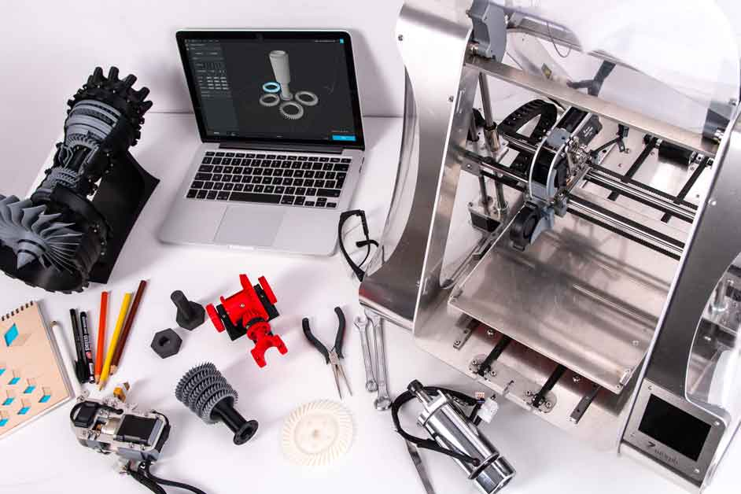
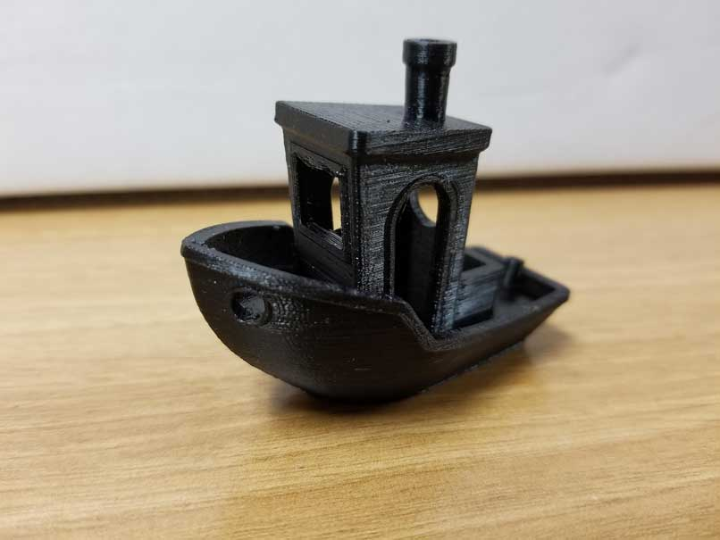
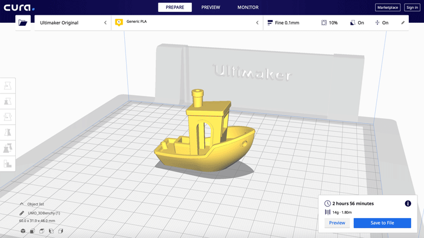
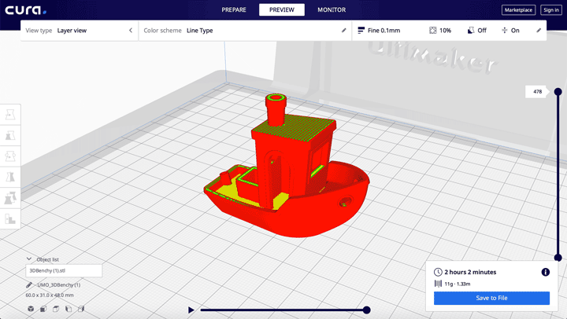
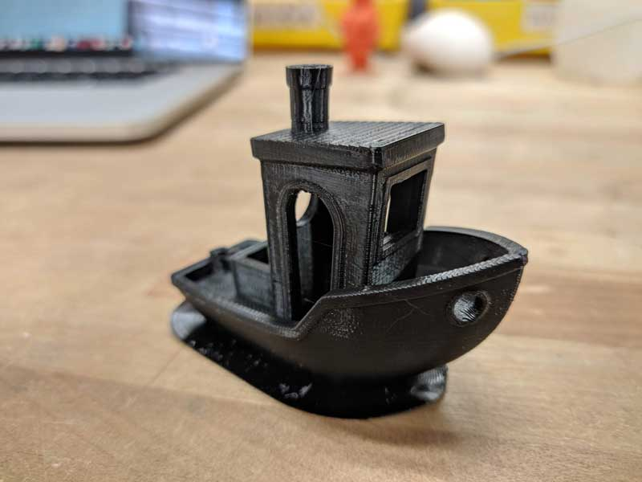

3D printing, or additive manufacturing, is a process of making solid objects form a digital file. The machines that do this are a subset of CNC machines, known commonly as 3D printers! The creation of a 3D object is done by layering material, frequently hot plastic, on top of itself over and over in a precise path to form objects.
How to 3D Print
A tutorial on the world's favorite rapid prototyping tool


Getting Started
First we need to find or create a model to 3D print! These can range from useful objects to use around the house to pieces of art or even accesories! 3D printing is extremely versatile, and is limited mostly by your imagination!
There are some great resources for finding these models, some of my favorites being Thingiverse and cults3D. There are plenty of others out there, these just happen to have a large community, and some great models! You could also model your own part, using software like Tinkercad or more advanced CAD software like Fusion360 but for a beginner, it's always nice to start with someone else's model.
Today I'll be using the popular "3DBenchy" model, which is commonly used as a benchmark for your printer's calibration, and a great starting point for beginners.

Load into Slicer
3D printers often require a bit of fine tuning, and print results can change from material to material. Try out a benchy and see if anything needs to be changed from the default settings.
Since I'm printing on my Ultimaker S5, I'll use Ultimaker's Cura software. Cura has a lot of great features, but there are all sorts of alternative slicers like Simplify3D and Slic3r.
I can simply drag the downloaded Benchy.stl file into Cura, and see the little model pop onto the virtual build plate! Positioning can be important for reducing the amount of supports and potential for failure, but luckily for benchy, he was designed to be printed without them!

Slice it
Select the resolution you want the print to run at and then hit slice! Smaller resolutions will make the print much longer, but will also reduce the visibility of the layer lines.
Since I want this benchy to print a bit faster, I'll slice it at a standard 0.15mm layer height without supports, and a brim to make sure it sticks to the print bed (frequently PLA prints can get unstuck from the bed and cause a print failure. A simple solution to this is actually just a glue stick!) You can check the "Preview" screen in cura to see the generated layers, and watch a simulation of the print before you send it off.
You can also use the Preview screen to check for potential problem areas, like large overhangs or gaps that could be hard to cross without supports. Double check to make sure everything is good to go, and you'll be ready to send it to print!
Sending to Print
On some newer printers and more expensive printers printing a model can be as simple as slicing and sending the generated gcode over wifi to the printer, but most of the time a physical drive will have to be used. These are most often just simple USB drives or microSD drives that you save the generated file to, and plug back into the printer.
In the case of a physical drive, make sure to select the correct file on the printer's interface and double check for anything that might get cause a failure, like a clogged print nozzle or some rogue plastic on the bed from a previous print. If everything is good to go, simply press "Print" and watch the magic happen!

Watch it go
The printer will first preheat the extruder nozzle and bed to make sure both are up to temperature, and will home the X, Y, and Z axis while doing this. Once they've preheated, the printer will move into position and begin printing!
Now's the time to sit back and relax, maybe go watch Thor Ragnarok again. Be sure to check on your print every now and then though, just to make sure everything is going smoothly. Failures can happen on even the best, most well-calibrated machines, especially on large prints, so keep an eye out!
The estimates provided by your slicing software are frequently inaccurate, but you should be able to find a completed 3D printed object within an hour or two of the estimated print time!

Collect your print!
Once your print has finished, the bed will fall back down to its home position, and you'll be able to collect your finished model! Depending on how stuck to the print bed your part is, you may have to use some external tools to help pry it off. Be careful with these though, they're sharp!
After you've removed the completed part, be sure to use light pressure or some pliers to remove any supports or brim materials that might still be stuck on it. Some sanding may also be required to get the part to a finished state, but it all depends on your desired outcome!
Congratulations! You get to admire your brand new 3D printed part, and think of what other amazing ideas you can make in the future. Happy printing!